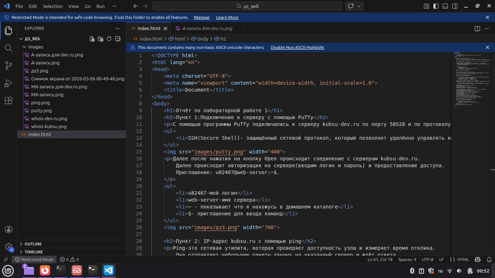
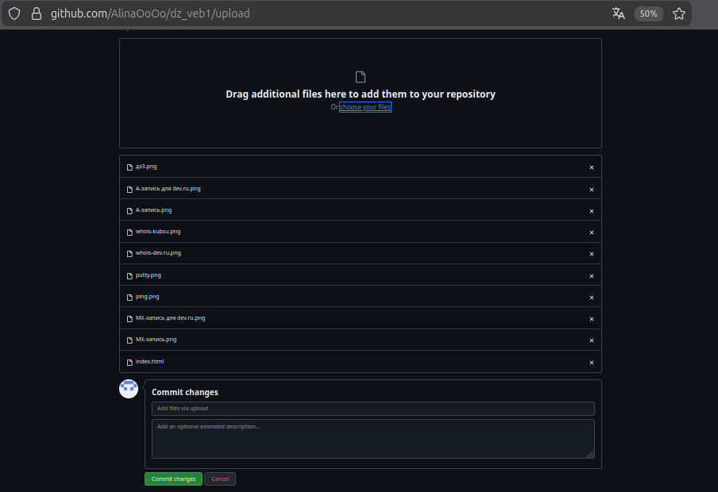
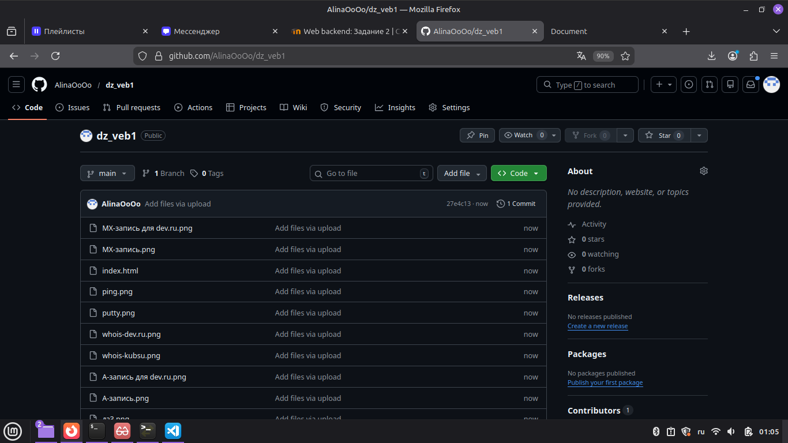
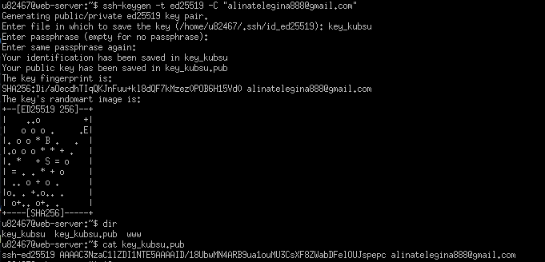
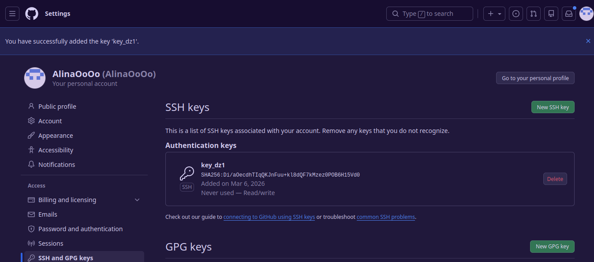
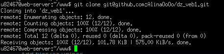
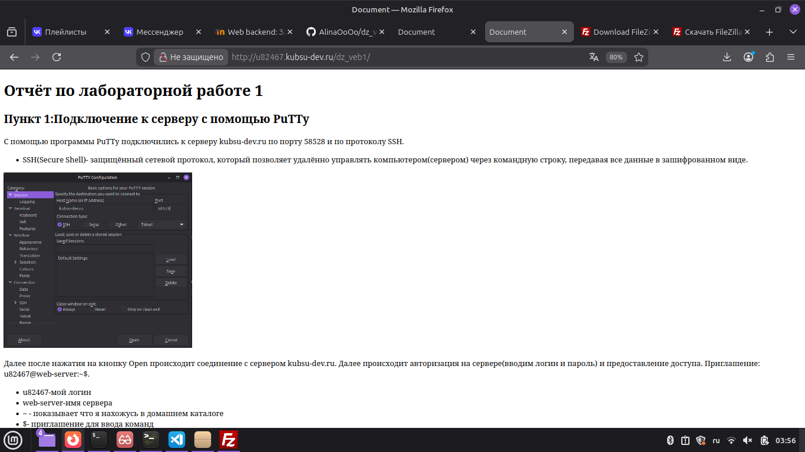
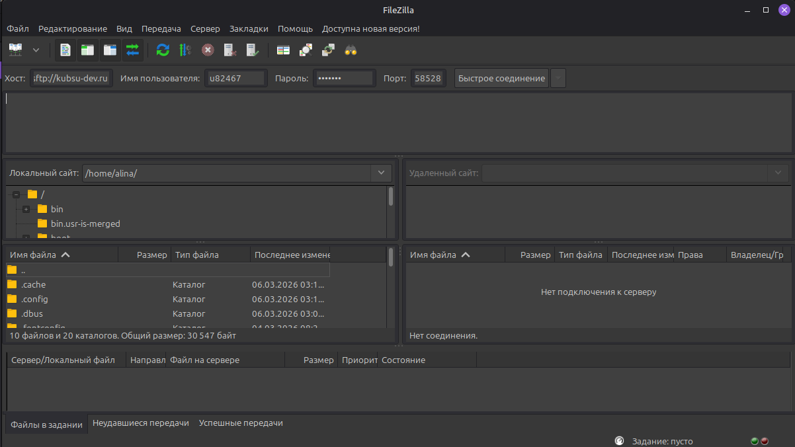
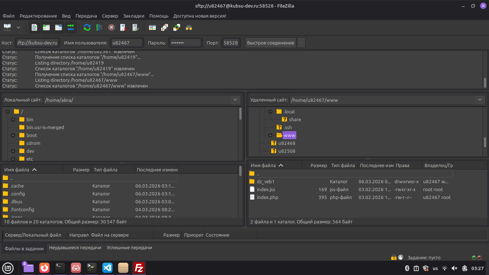
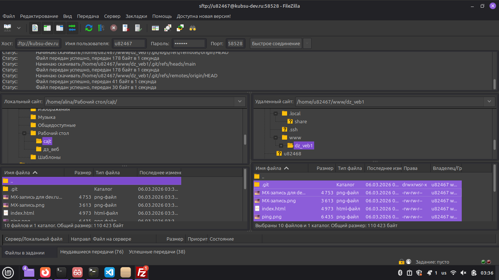

С помощью программы PuTTy подключились к серверу kubsu-dev.ru по порту 58528 и по протоколу SSH.

Далее после нажатия на кнопку Open происходит соединение с сервером kubsu-dev.ru. Далее происходит авторизация на сервере(вводим логин и пароль) и предоставление доступа. Приглашение: u82467@web-server:~$.

Ping-это сетевая утилита, которая проверяет доступность узла и измеряет время отклика. Она отправляет небольшие пакеты данных на указанный сервер и ждёт ответа.
Использовала утилиту ping -c 4 kubsu.ru

nslookup(Name Server Lookup)- утилита для запросов к DNS-серверам,показывает различные записи домена.
Узнаем сначала для kubsu.ru А-запись и МХ-запись
nslookup kubsu.ru

Server:127.0.0.53- DNS-сервер,к которому обратились
Address:127.0.0.53#53 - это А-запись(IP-адрес) домена
nslookup -type=MX kubsu.ru (-type=MX - указывает что нужны только МХ-записи)

mail exchanger=50 mx.kubsu.ru - почта для домена
число 10 означает приоритет(чем меньше число,тем выше приоритет)
Теперь для kubsu-dev.ru сначала А-запись,затем МХ-запись
nslookup kubsu-dev.ru

nslookup -type=MX kubsu-dev.ru

Whois - это протокол и утилита для получения информации о домене: кто владелец, когда зарегистрирован, когда истекает срок регистрации.
whois kubsu.ru (запрашивает информацию о домене)

whois kubsu-dev.ru

Скрины для сайта

Написала HTML-страницу

Создала репозиторий в Git


Заливаем сайт на учебный сервер с помощью git clone и создания ключа шифрования



Проверяем что всё вышло с помощью ссылки на адрес сайта http://u82467.kubsu-dev.ru/dz_veb1/

Пункт 6: FileZilla
SFTP(SSH File Transfer Protocol)- безопасный протокол передачи файлов поверх SSH. Позволяет копировать файлы между компьютером и сервером.
Установим соединение в FileZilla


И скопируме все файлы в правой части и перетащим в левую(левая панель- локальный компьютер, правая панель- сервер)
